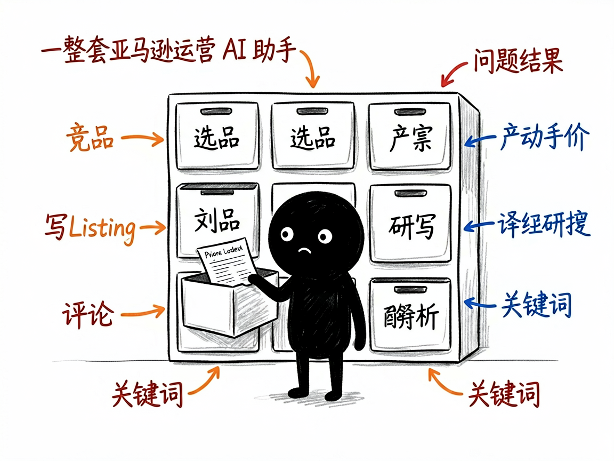

这个类目值不值得进？用五维模型让 AI 帮你算清楚 —— category-selection 介绍
选品最难的不是"找产品"，是"选类目"。一个类目看起来热闹，可能早已红海；看着冷清，也许藏着蓝海。靠感觉进，往往进去就亏。category-selection 就是干这个的：它用一套五维评分模型，对一个亚马逊品类做深度市场调研，直接告诉你"进还是不进、怎么进"。

它到底能做什么
- 五维打分：市场规模、增长潜力、竞争烈度、进入壁垒、利润空间，五个维度量化评分。
- 综合评级：80+ 强烈推荐、70+ 可以考虑、50+ 谨慎、50 以下不建议。
- Top 产品扫描：默认拉取类目 Top20 产品，分析价格、品牌、评论分布。
- 趋势洞察：25 个月历史趋势，看清季节性和生命周期。
- 自动报告：调研完直接生成 Markdown 分析报告，决策有依据。
怎么用
场景 1：想进一个新类目 你：帮我分析美国站的 Sofas 品类，值不值得进？ AI：它跑五维模型，给你评分和"强烈推荐 / 谨慎进入"的结论，附上依据。
场景 2：多个类目对比 你：Kitchen 和 Garden 哪个更适合新手？ AI：分别出报告，你横向一比就知道该把资源押在哪。
谁适合用
- 做跨境电商选品、新品开发的卖家。
- 代运营、选品调研团队。
- 不想靠拍脑袋、要用数据决定"进不进"的创业者。
一点说明
本技能依赖 Sorftime 接口获取类目数据，需配置对应账号。分析数量、站点都可调，默认 Top20。具体以 SKILL.md 为准。